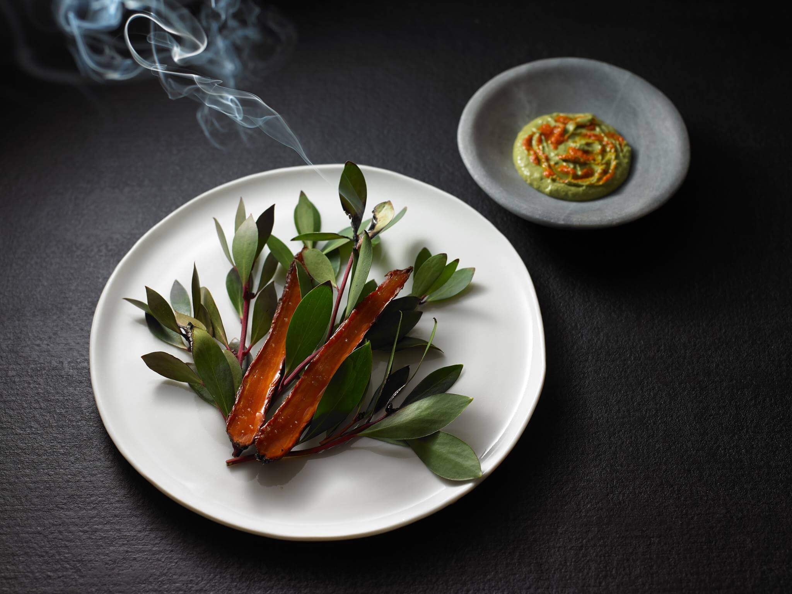
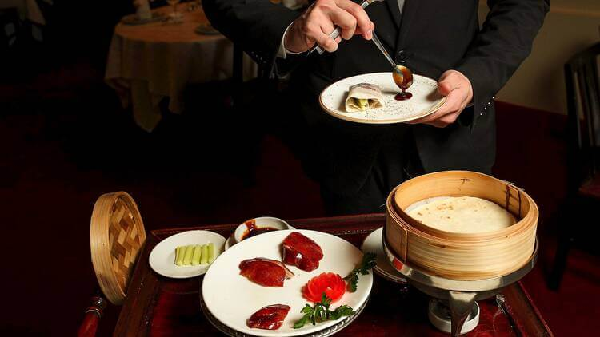
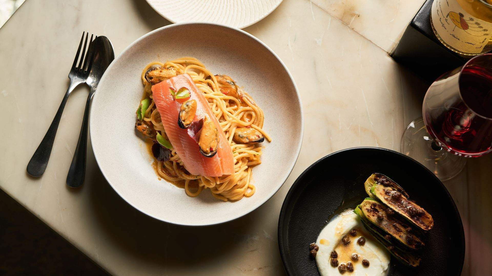
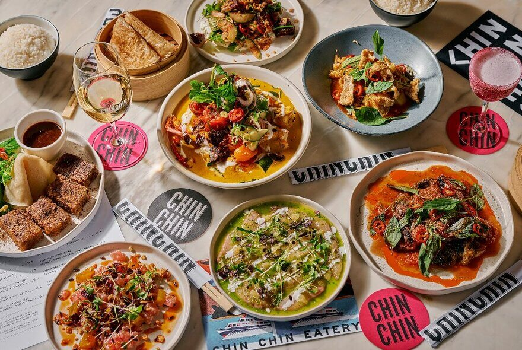
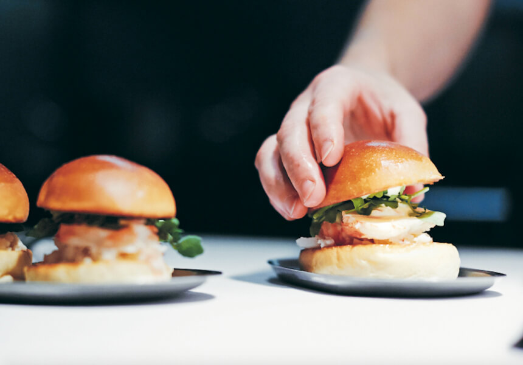
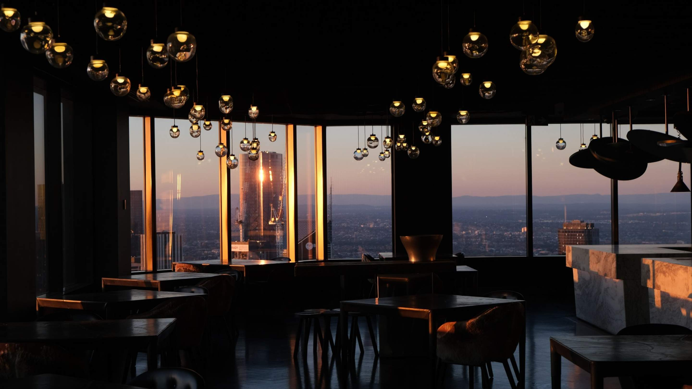
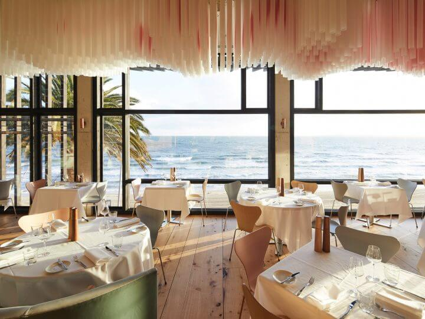
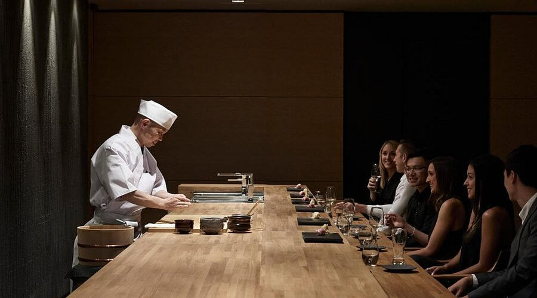

Contemporary Australian Editor's ChoiceAttica
Ripponlea
Browse
From iconic fine dining to beloved neighbourhood staples, we've curated Melbourne's most exceptional tables. Browse, compare, and book your next great meal.

Contemporary Australian Editor's ChoiceRipponlea

CantoneseMelbourne CBD

ItalianMelbourne CBD

Southeast AsianMelbourne CBD

Pan-AsianMelbourne CBD

Modern Australian Editor's ChoiceMelbourne CBD

Modern AustralianSt Kilda

Japanese Omakase Editor's ChoiceRichmond